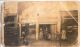
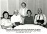

WILLOWS, John
-
Name WILLOWS, John Born 28 Aug 1895 Bendigo, Victoria, Australia  [1]
[1] Gender Male Occupation Railway Officer Unique Id 5EB99CCEBAA448C99EE19C03E839661BB05A Died 6 Nov 1976 Willagee, Western Australia, Australia [2] - Excerpts from letters written to John Geoffrey Eamer [18/12/1948] by his father Jack, while John and his wife [Lynette] where on extended holidays in Europe, during the last half of 1976.
++++++++++++++++++++++++++++++++++++++
[Date Sunday 1st August 1976 - Jack Eamer]
Was talking to Old Jack and Mavis on the phone the other day. Old Jack is not the best but they are both going to fly to Adelaide about the middle of October for Joy's daughter's wedding.
[Dated 10th October 1976 - Jean Eamer]
Old Jack and Mavis where also thrilled to bits when they received their card from you, poor old Jack has had 7 weeks in hospital and is home again from last Sunday. I was speaking to him over the phone and he seemed very frail by his voice. But at 83 it's amazing he pulled through.
[Dated Thursday 28th October 1976 - Jack Eamer]
We went down and saw Mavis and Jack Willows while Rob [middle son] and June [his wife] were here. Old Jack is back home after 8 weeks in hospital and seems to have aged about 10 years in that time. He has lost a lot of weight and very tottery on his legs but I suppose at 81 you can expect him to start showing his age. At least he is all there in the head and still has his sense of humour.
[Dated Monday 08th November 1976 - Jack Eamer]
Poor old Jack Willows passed away in his sleep on Friday night - when Mavis went into his room on Sat morn he was just peacefully lying there.
He rang me on the Friday evening about 5 o'clock and I am convinced he rang to say goodbye. He sounded very frail and fed up with everything and at the end of our conversation seemed to break down and his voice choked up. I told Mum [wife Jean] at tea that I didn't think he would last much longer and so we made arrangements there and then to go down in the weekend and see him but we were too late. Mavis rang on Saturday morning and when Brian [youngest son] called out that it was Auntie Mavis on the phone I knew then that he had passed away.
Ray Smith as usual took charge of everything and made all the arrangements with the undertakers etc. Rose stayed with Mavis on Saturday night.
Joy - Mavis' daughter - flew in from Adelaide about midday Sunday so Mum and I picked her up at the Airport, took her down and saw Mavis at the same time. She didn't seem to bad and enquired after you both so I think it would be nice if you sent her a card - I know she would appreciate it very much.
.
Buried Fremantle, Western Australia, Australia Person ID I49 Tree One Last Modified 13 Sep 2007
Father WILLOWS, John, b. 21 Jan 1848, Adelaide, South Australia, Australia , d. 7 May 1933, Fitzroy, Victoria, Australia (Age 85 years) Mother SPENCER, Eleanor, b. 1862, Bendigo, Victoria, Australia , d. 23 Sep 1932, Subiaco, Western Australia, Australia (Age 70 years) Married 21 Dec 1880 Bendigo, Victoria, Australia Family ID F4 Group Sheet | Family Chart
Family SHIRLEY, Mavis Lenora, b. 26 Sep 1899, Port Augusta, South Australia, Australia , d. 1985, South Australia, Australia (Age 85 years) Married 31 Jan 1922 Port Augusta, South Australia, Australia Children + 1. WILLOWS, Joy, b. 1930 Last Modified 26 Apr 2009 Family ID F15 Group Sheet | Family Chart
- Excerpts from letters written to John Geoffrey Eamer [18/12/1948] by his father Jack, while John and his wife [Lynette] where on extended holidays in Europe, during the last half of 1976.
-
Event Map Born - 28 Aug 1895 - Bendigo, Victoria, Australia 
Died - 6 Nov 1976 - Willagee, Western Australia, Australia Buried - - Fremantle, Western Australia, Australia = Link to Google Earth Pin Legend  : Address
: Address
 : Location
: Location
 : City/Town
: City/Town
 : County/Shire
: County/Shire
 : State/Province
: State/Province
 : Country
: Country
 : Not Set
: Not Set
-
Photos John Willows
Postcard Photo taken 1919John (Jack) Willows and sister Alice Easter (Essie) John Willows 
WILLOWS Grocery Store - 95 Mundy St., Bendigo, Victoria
Who are the subjects? Here is an attempt to identify them.
By blowing up the photo it would appear that the woman second from the Left is clearly the oldest, by far, more than likely Eleanor, and on closer inspection it is not too hard to perceive that she is possibly pregnant.
For the young lady on her right (who is clearly maturing) to be…
John Willows with wife Mavis - Perth April 1967
L-R: Josephine Dwyer, Mavis Shirley, Caroline Willows, Nancy Dwyer and John Willows.
-
Notes - The couple stayed with Jack and Jean EAMER when on hols from ADELAIDE c.1968 and then moved over to PERTH and bought a home in WILLAGEE c.1970.
------- [3]
- The couple stayed with Jack and Jean EAMER when on hols from ADELAIDE c.1968 and then moved over to PERTH and bought a home in WILLAGEE c.1970.
-
Sources - [S2] BDM - Victoria, Department of Justice, Victoria, Australia.
Births in the District of Bendigo, Victoria Registered by Maggie White Buchan
No 35519
Date: 28 August 1895
When & Where: Mundy Street, City of Bendigo, County of Bendigo
Child's Name: JOHN
Sex: Male
Father: John Willows, Grocer, 47 years
B'Place: Adelaide South Australia
Marr: 21 Dec 1880, Bendigo
Previous Issue: Lucy, 13 yrs; Alice Easter 11 yrs; Norman 9 yrs; Maud 6 yrs; Caroline 4 yrs; Ernest Wickham
Mother: Eleanor Willows, formerly Spencer, 34 yrs, Bridge Street, Bendigo
Witnesses: Accoucher none; Nurse Miss Ende
Date of Registration: 27 Sept 1895
Registrar: M.W. Buchan
Lived 7 years VIC, 35 in SA, and 39 in WA. Resident 56 Garling St Willagee WA at death.
Died of myocardial infarction/ischaemic heart disease. Memorialised Fremantle Cemetery. Bronze plaque lawn, site 5. - [S3] Cemetery - Karrakatta, Government of Western Australia.
First Names Last Name Application Number
JOHN WILLOWS FB00027621
Aged (Years) Date of Death Suburb
81 06/11/1976 WILLAGEE
Grave Location
FREMANTLE LAWN GARDEN BRONZE PLAQUE 0005
Grant Number Grant Status Expiry
F0013832 CURRENT 25/11/2012 - [S5] Correspondence - Jack Eamer, Jack and Jean Eamer, (Created between August and November 1976).
Excerpts from letters written to John Eamer by his father Jack, while John and his wife [Lynette] where on extended holidays in Europe, during the last half of 1976.
[Date Sunday 1st August 1976 - Jack Eamer]
Was talking to Old Jack and Mavis on the phone the other day. Old Jack is not the best but they are both going to fly to Adelaide about the middle of October for Joy's daughter's wedding.
[Dated 10th October 1976 - Jean Eamer]
Old Jack and Mavis where also thrilled to bits when they received their card from you, poor old Jack has had 7 weeks in hospital and is home again from last Sunday. I was speaking to him over the phone and he seemed very frail by his voice. But at 83 it's amazing he pulled through.
[Dated Thursday 28th October 1976 - Jack Eamer]
We went down and saw Mavis and Jack Willows while Rob [middle son] and June [his wife] were here. Old Jack is back home after 8 weeks in hospital and seems to have aged about 10 years in that time. He has lost a lot of weight and very tottery on his legs but I suppose at 81 you can expect him to start showing his age. At least he is all there in the head and still has his sense of humour.
[Dated Monday 08th November 1976 - Jack Eamer]
Poor old Jack Willows passed away in his sleep on Friday night - when Mavis went into his room on Sat morn he was just peacefully lying there.
He rang me on the Friday evening about 5 o'clock and I am convinced he rang to say goodbye. He sounded very frail and fed up with everything and at the end of our conversation seemed to break down and his voice choked up. I told Mum [wife Jean] at tea that I didn't think he would last much longer and so we made arrangements there and then to go down in the weekend and see him but we were too late. Mavis rang on Saturday morning and when Brian [youngest son] called out that it was Auntie Mavis on the phone I knew then that he had passed away.
Ray Smith as usual took charge of everything and made all the arrangements with the undertakers etc. Rose stayed with Mavis on Saturday night.
Joy - Mavis' daughter - flew in from Adelaide about midday Sunday so Mum and I picked her up at the Airport, took her down and saw Mavis at the same time. She didn't seem to bad and enquired after you both so I think it would be nice if you sent her a card - I know she would appreciate it very much.
- [S2] BDM - Victoria, Department of Justice, Victoria, Australia.